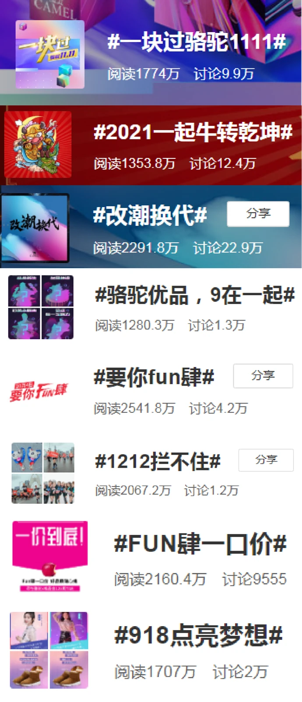
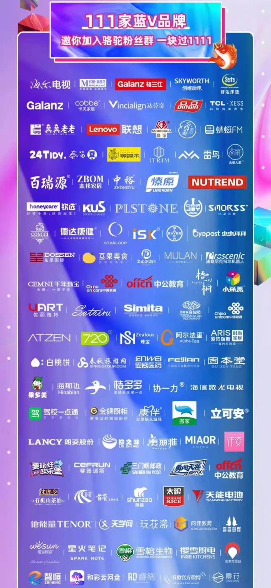

🏢 品牌官号运营 · 骆驼集团
官号粉丝从 61 万增长至 143 万，打造 8 个千万级话题
61→143万
官方微博粉丝（净增 82 万）
8个
千万级曝光话题活动
327万
单篇微博阅读量
+40%
话题平均曝光量提升
项目概览
品牌号靠话题公式。通过日常交互人格化、热点借势及蓝V品牌联动，在有限预算下低成本打造百万级官号。
🎯 背景与挑战
接手时 @CAMEL骆驼官方微博粉丝 61 万，处于增长瓶颈期。品牌面临的核心挑战：
- 传统户外品牌，内容调性偏硬，用户互动意愿低
- 竞品纷纷布局新媒体，需要差异化突围
- 预算有限，必须探索低成本增长路径
💡 我的策略
基于对微博生态的深度理解，我制定了「三步走」策略：
- 人格化运营：把官号从「品牌发言人」变成「有性格的小伙伴」
- 话题营销驱动：用话题活动撬动自然流量，打造爆款内容
- 蓝V联动破圈：通过品牌异业合作互相导流，低成本涨粉
⚙️ 执行过程
01
日常内容人格化
把内容从硬广思维转成用户思维，建立内容日历保证日更，同时注重互动回复，让账号「活」起来。
02
话题营销公式
通过大量实战总结出 3 类高互动话题公式，用话题活动承接热点与情绪，稳定撬动自然流量。
03
蓝V联动破圈
双11 策划「111 家蓝V品牌联合」活动，累计合作 300+ 品牌一起联动搞事情，互相导流。
04
KOL投放与复盘
主导 KOL 投放计划 21 次，独立完成机构筛选、商务谈判与审稿，并用数据复盘迭代话题公式。
话题条数之外更重要的是可复用的公式：把跑出来的高互动结构沉淀成模版后，后续话题平均曝光量提升约 40%，换账号、换品类仍可套用。
📊 成果数据




粉丝从 61 万增长至 143 万，任职期间净增 82 万、零投放增长。同期热点借势内容亦有外溢：#南方人冬天睡觉流程# 登微博热搜 TOP9，「地摊经济」借势内容被《文案君》收录，阅读量 10 万+。
🧠 复盘与方法论
从 7 个千万级话题里复盘出的核心结论是：高互动不靠灵感，靠结构。3 类话题公式的价值在于可复制——它让「爆款」从偶然变成可预期的产出。
这段经历是我后来做个人 IP 冷启动（案例一）与团队 SOP（案例六）的方法来源。